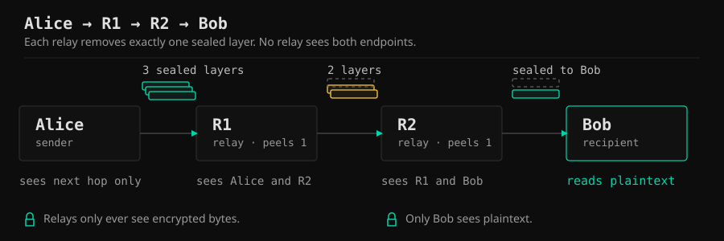

No accounts.
A locally generated keypair is your identity. No email, no phone, no server-side registration.
A working C++ prototype of onion-routed, end-to-end encrypted chat that runs entirely on your local network.
Built in 1 week. LAN-only. No cloud. No accounts.
A locally generated keypair is your identity. No email, no phone, no server-side registration.
Messages are wrapped in multiple encryption layers and forwarded through other online peers. Each relay removes exactly one layer.
No relay can read the message or identify both the sender and recipient. Only the recipient sees plaintext.

The honest list matters: this is a seven-day demonstration, not a production messenger. Read the known issues.
Four nodes on one LAN. Commands typed in Alice’s pane, relay output in R1 and R2, plaintext only in Bob’s pane.
Loading the terminal recording…
Demo recording will be added before submission. The exact command sequence is in the runbook.
Four nodes. One LAN. Alice sends “hello through the mesh” to Bob via R1 and R2. R1 and R2 only see encrypted bytes.
tar -xzf meshchat-linux-x86_64.tar.gz
./run.shrun.batUnzip the release first, then run run.bat.
Physical hardware testing is the user’s responsibility. CI verifies six real processes over UDP on Linux and Windows.
Windows note: the binary is unsigned. Smart App Control may block it. Use the Linux bundle or a machine with SAC off; do not disable SAC on a shared demo machine.
Scope and threat model: KNOWN_ISSUES.md and SECURITY.md.